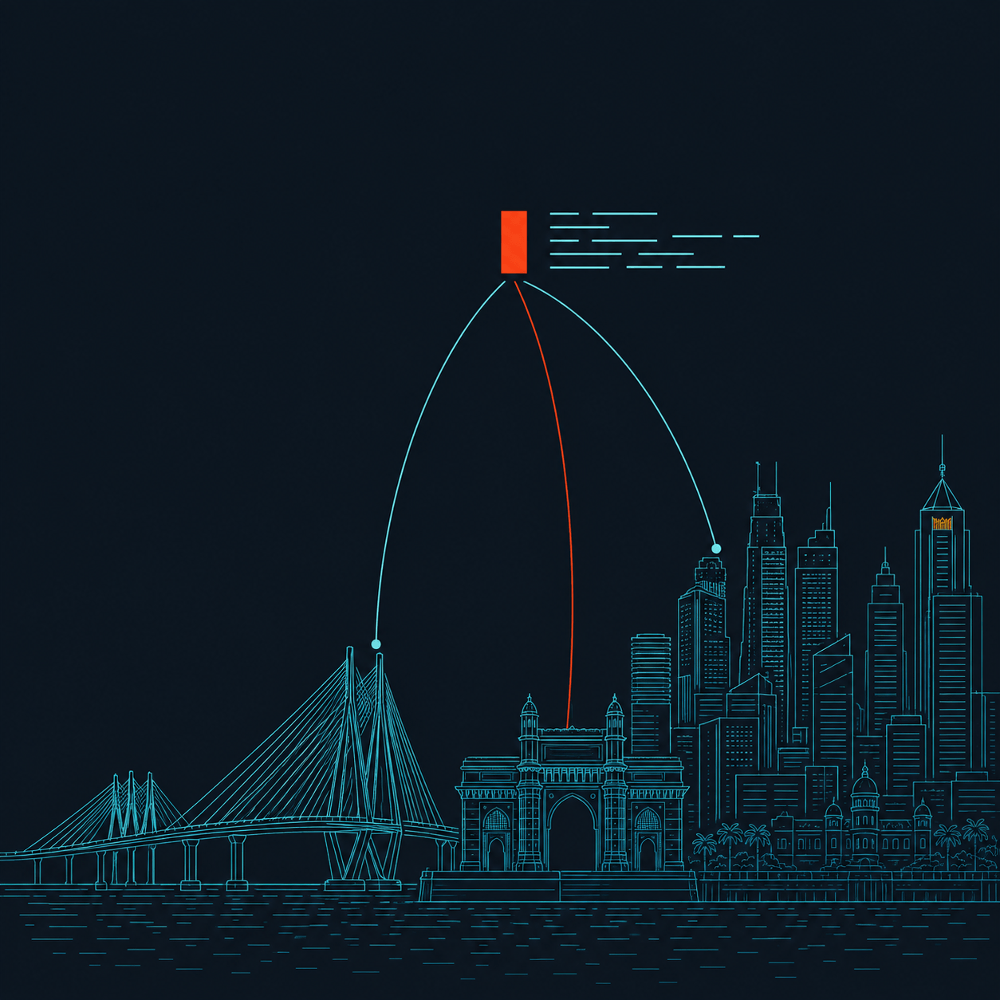

UiPath Public

Agentic testing
Orchestrated end to end in UiPath Test Cloud
10 Oct 2026
Mumbai · In person
Jeet Doshi · UiPath Community Mumbai
UiPath Public
AGENDA · 40 MINUTES
Set the base, then build it live.
10 min
Set the base
Why testing needs agents, what Test Cloud offers, and the design of the flow we will run.
27 min
Live demo
One Data Fabric record in. Scored, reviewed, generated, published and executed.
3 min
Wrap-up
Takeaways and your questions.
0:00
0:10
0:37
0:40
UiPath Public
Agents ship apps faster than ever. Who tests them?
THE VIBE-CODING PARADOX
?
?
?
?
?
?
?
?
?
?
9:00 AM. The agent never sleeps.
Prompt in, app out.
12 apps before lunch!
The code? The language? Nobody knows.
?
?
?
?
?
?
?
?
?
CHANGE REQUEST #42
3 weeks later...
Who tests all of these?
Who guards quality
when they change?
UiPath Public
WHY WE ARE HERE
The time needed for testing
is always bigger than
the time you get.
Software testing never ends; it just stops.
UiPath Public
We're creating risk faster than we can test.
THE GAP
2025
Today
2027
2022
2023
2024
Software Quality
Testing Demand
Testing Supply
UiPath Public
WHERE THE GRIND SITS
Agents step in across the lifecycle.
In the demo
Test design
•Evaluate requirements
•Create test cases
•Review test design
•Prioritize test cases
Not today
Test automation
•Select tests to automate
•Create test automation
•Generate test data
•Refactor automation
In the demo
Test execution
•Spin up environments
•Provision test data
•Trigger execution
•Review results
In the demo
Test management
•Synchronize requirements
•Monitor test runs
•Create reports
•Notify stakeholders
UiPath Public
UIPATH TEST CLOUD
Three moves to close the gap.
1
Leverage agents
Built-in Autopilot agents across every phase of testing, ready from day one.
In the demo: Autopilot runs the tests
2
Build agents
Low-code or coded agents tailored to your process, with context and guardrails.
In the demo: a requirement analyst and a test case creator
3
Orchestrate agents
Connect agents, automations and humans into governed end-to-end workflows.
In the demo: one Maestro BPMN process
UiPath Public
UIPATH MAESTRO
One BPMN model for agents, people and systems.
Maestro
one BPMN model
Agents
Start and wait for an agent, built in UiPath or hosted elsewhere, as a step in the process.
People
Create an action app task, so a human reviews or approves in Action Center and the process waits.
Systems
Wait for connector events, execute connector activities, and run RPA or API workflows.
Every run is an instance with its own execution trail, so you can see exactly where it is and why.
![Agents](data:image/svg+xml,%3Csvg xmlns='http://www.w3.org/2000/svg' id='Icons_RobotHand_M' overflow='hidden' viewBox='0 0 96 96'%3E%3Cstyle%3E.iconFill%7Bfill:%23fa4616%7D%3C/style%3E%3Cg id='Icons'%3E%3Cpath d='M90.291 37.088a1 1 0 0 0-.8-.913l-10.572-2.154a.99.99 0 0 0-.906.272l-1.328 1.328-19.448-19.25a6.96 6.96 0 0 0-9.46-.94L26.683 32.024C26.456 32.014 26.23 32 26 32c-9.936.012-17.988 8.064-18 18v21.1A5.01 5.01 0 0 0 4 76v5h44v-5a5.005 5.005 0 0 0-4.056-4.9L44 50a17.86 17.86 0 0 0-3.862-11.074l9.486-11.35a6.87 6.87 0 0 0 4.655.035l15.333 15.083-1.456 1.455a1 1 0 0 0-.275.9l2.045 10.683a1 1 0 0 0 .916.809l10.606.707h.068a1 1 0 0 0 .065-2l-9.836-.655-1.8-9.405 9.1-9.1 9.3 1.894.655 9.845c.044.548.515.96 1.064.932A1 1 0 0 0 91 47.694zM46 76v3H6v-3a3 3 0 0 1 3-3h34a3 3 0 0 1 3 3m-4-26-.056 21H10V50a16.01 16.01 0 0 1 13.991-15.857l-4.01 3.157A8.321 8.321 0 0 0 25.323 52c.121 0 .243 0 .365-.009a8.34 8.34 0 0 0 6.012-2.972l7.131-8.532A15.9 15.9 0 0 1 42 50m-11.832-2.265a6.25 6.25 0 0 1-4.568 2.258 6.17 6.17 0 0 1-4.748-1.845 6.32 6.32 0 0 1 .389-9.3l23.8-18.735c.011-.008.018 0 .016.009a6.89 6.89 0 0 0 2.766 6.48zm16.874-26.083a5 5 0 1 1 9.915-1.303 5 5 0 0 1-9.915 1.303m11.972-.716L75.238 37l-4.244 4.245-14.857-14.611A6.99 6.99 0 0 0 59 21.1v-.154c0-.018 0-.02.014-.01' class='iconFill'/%3E%3Cpath d='M24.636 40.147a3 3 0 1 0 3.993 4.466 3 3 0 0 0-3.994-4.466zm2.579 3.053a1.02 1.02 0 0 1-1.413 0 1 1 0 1 1 1.414 0zM52.49 18.547a2.5 2.5 0 1 0-.978 4.903 2.5 2.5 0 0 0 .978-4.903M52 21.5a.5.5 0 1 1 0-1 .5.5 0 0 1 0 1' class='iconFill'/%3E%3C/g%3E%3C/svg%3E)
![People](data:image/svg+xml,%3Csvg xmlns='http://www.w3.org/2000/svg' id='Icons_TwoMen_M' overflow='hidden' viewBox='0 0 96 96'%3E%3Cstyle%3E.iconFill%7Bfill:%23fa4616%7D%3C/style%3E%3Cg id='Icons'%3E%3Cpath d='M39.032 34.979a1 1 0 0 0-1 1L38.022 86h-4.991V58h-2v28h-5V35.979a1 1 0 1 0-2 0V88h15.991l.01-52.021a1 1 0 0 0-1-1M32.031 22a7 7 0 1 0-7-7 7.01 7.01 0 0 0 7 7m0-12a5 5 0 1 1 0 10 5 5 0 0 1 0-10m38.001 24.979a1 1 0 0 0-1 1L69.022 86h-4.991V58h-2v28h-5V35.979a1 1 0 1 0-2 0V88h15.991l.01-52.021a1 1 0 0 0-1-1M63.031 22a7 7 0 1 0-7-7 7.01 7.01 0 0 0 7 7m0-12a5 5 0 1 1 0 10 5 5 0 0 1 0-10' class='iconFill'/%3E%3Cpath d='m79 52.259-1.9-19.85a5.5 5.5 0 0 0-.567-1.818q-.315-.587-.748-1.092a17.4 17.4 0 0 0-7.145-4.563 16.7 16.7 0 0 0-5.6-.935h-.02c-1.9-.013-3.789.302-5.582.93-2.746.916-5.22 2.5-7.2 4.612a6.3 6.3 0 0 0-.709 1.049 5.5 5.5 0 0 0-.566 1.818l-1.423 9.727a.01.01 0 0 1-.01.01.01.01 0 0 1-.01-.01l-1.42-9.728a5.5 5.5 0 0 0-.567-1.818q-.316-.587-.748-1.092a17.4 17.4 0 0 0-7.145-4.563 16.9 16.9 0 0 0-5.6-.936c-1.906-.015-3.801.3-5.6.931-2.746.916-5.22 2.5-7.2 4.612a6.3 6.3 0 0 0-.709 1.049 5.5 5.5 0 0 0-.572 1.867l-1.892 19.758a4.42 4.42 0 0 0 .82 3.6A3.68 3.68 0 0 0 19.81 57a1 1 0 1 0 0-2 1.8 1.8 0 0 1-1.415-.495 2.6 2.6 0 0 1-.342-2.056L19.942 32.7a3.5 3.5 0 0 1 .35-1.162q.19-.354.442-.667a15.4 15.4 0 0 1 6.349-4.045A14.8 14.8 0 0 1 32.04 26a14.5 14.5 0 0 1 4.954.83 15.34 15.34 0 0 1 6.3 4q.276.331.479.71c.182.364.3.756.347 1.16l2.4 16.414-.454 3.1a4.42 4.42 0 0 0 .82 3.6A3.68 3.68 0 0 0 49.81 57a1 1 0 1 0 0-2 1.8 1.8 0 0 1-1.415-.495 2.54 2.54 0 0 1-.348-2.006l.42-2.871a.97.97 0 0 0 .075-.51l2.4-16.415a3.5 3.5 0 0 1 .35-1.162q.19-.354.442-.667a15.4 15.4 0 0 1 6.349-4.045 14.7 14.7 0 0 1 4.86-.829h.091c4.25.023 8.31 1.763 11.256 4.826q.275.331.479.71c.177.349.294.725.345 1.113l1.9 19.842c.17.69.045 1.421-.347 2.015a1.8 1.8 0 0 1-1.414.494 1 1 0 1 0 0 2 3.69 3.69 0 0 0 2.923-1.181 4.38 4.38 0 0 0 .824-3.56' class='iconFill'/%3E%3C/g%3E%3C/svg%3E)

UiPath Public
THE IDEA
One new record in.
Tested requirements out.
No one starts the process and no one copies data between tools. A human steps in only when the requirement is unclear.
UiPath Public
THE FLOW
Seven steps from record to executed tests.
1
Trigger
Record created in Data Fabric
Automation
2
Score
Agent rates it from 0 to 100
Agent
3
Review
Human edits if the score is below 75
Human
4
Register
Requirement created in Test Manager
Automation
5
Generate
Agent writes test cases and steps
Agent
6
Publish
Cases and steps added and linked
Automation
7
Run
Autopilot executes the tests
Agent
In parallel with scoring, the process looks up the Test Manager project by its prefix. A success email lists everything created, and any failure sends an email instead.
UiPath Public
THE SOLUTION
One solution, four projects.
PROCESS ORCHESTRATION
Maestro BPMN
The end-to-end flow, from record to success email
AGENT
Requirement Analyst agent
Scores a requirement from 0 to 100 with reasoning
AGENT
Test case creation agent
Writes test cases and steps as structured JSON
ACTION APP
Requirement approval
Where a reviewer edits and submits the requirement
CONNECTIONS
Data Fabric
Test Manager
Outlook 365
UiPath Public
APPENDIX · STEP 1 · TRIGGER
A Data Fabric entity holds the requirement.
JiraRequirements field | Used for |
Name | Requirement name in Test Manager |
Description | The text that is scored and turned into test cases |
JiraID | Requirement ID shown to the reviewer |
TRIGGER
A Data Fabric connector event for a created record, delivered by webhook through Integration Service.
START INPUTS
ProjectPrefix picks the Test Manager project. EmailAddress lists who gets the success and failure emails.
UiPath Public
APPENDIX · STEP 2 · SCORE
An agent scores every requirement.
Score | Meaning |
90 to 100 | Excellent: directly usable for test case creation |
70 to 89 | Mostly clear: minor gaps but usable |
50 to 69 | Partially clear: important ambiguity exists |
30 to 49 | Ambiguous: significant details missing |
0 to 29 | Unusable: not enough to create meaningful tests |
ROUTING THRESHOLD
75
Below 75: a human reviews
75 and above: straight to generation
The agent judges clarity, inputs and outputs, testable acceptance criteria, edge cases and vague language. It returns a Score and its Reasoning, and never writes test cases.
UiPath Public
APPENDIX · STEP 3 · REVIEW
A human steps in only when needed.
Only when the score is below 75
Sees
The requirement ID and name, read-only, with the description to review.
Edits
Rewrites the description in an editable text area to remove the ambiguity.
Decides
Submit continues the flow. Reject sends a failure email and ends the instance.
Built as an action app in Studio Web and assigned to a single user in Action Center.
UiPath Public
APPENDIX · STEPS 4 AND 5 · REGISTER AND GENERATE
A second agent writes the test cases.
The requirement is created in Test Manager first, so the agent receives its ID. The agent returns structured JSON, never free text.
Field | What the agent returns |
name, description | Action-oriented title and the objective being verified |
properties | testType (Positive, Negative, Smoke) and priority (High, Medium, Low) |
testSteps | Ordered steps, each a verb-first action with an observable expected result |
summary | totalTestCases, coverageNotes and assumptions |
UiPath Public
APPENDIX · STEP 6 · PUBLISH
Maestro publishes to Test Manager.
Step | Test Manager call | Result |
Find the project | GET /v2/projects/prefix/{projectPrefix} | Project ID |
Create requirement | POST /v2/{ProjectId}/requirements | Requirement and key |
Create test case | POST /v2/{ProjectId}/testcases | One per case |
Create test step | POST /v2/{ProjectId}/teststeps | Ordered steps |
Link to requirement | POST /v2/{ProjectId}/requirements/{Id}/assigntestcases | Traceability |
Each call is a connector activity. A loop creates one test case at a time, then its steps in order. A success email lists every object key, and any failure sends an email instead.
UiPath Public
APPENDIX · STEP 7 · RUN
Autopilot runs the tests the flow created.
What Autopilot does
Runs manual tests autonomously, with no pre-built automation behind them.
What you will see
The new test cases selected in Test Manager, run by Autopilot, with results to review.
A requirement became executed tests, with a human involved only where it mattered.
UiPath Public
DESIGN CHOICES
Four principles behind the design.
Event-driven
A new record starts the work. Nobody has to remember to run it.
One agent, one job
Scoring and generation are separate agents, each easy to test and improve.
Human only when needed
A reviewer is pulled in only when the score is below 75.
Traceable and resilient
Test cases link to the requirement, and every failure sends an email.
UiPath Public
PART 2 · 27 MINUTES
Live instance run
Data Fabric, Maestro, two agents, Test Manager and Autopilot.
UiPath Public
WRAP-UP
What to take away.
1
Autonomy is a design choice.
Start with one event, one conditional human checkpoint and a few focused agents.
2
Agents and people share one process.
Maestro supplies the hand-offs, the execution trail and the error handling.
3
Testing starts at the requirement.
Scoring first means weak requirements get fixed before tests are built on them.
UiPath Public
Thank You
Questions?
TRY IT YOURSELF
UiPath Test Cloud: Maestro, Agent Builder, Test Manager and Autopilot. Start free at cloud.uipath.com
JEET DOSHI
Technical Account Manager, WonderBotz
Scan to connect on LinkedIn